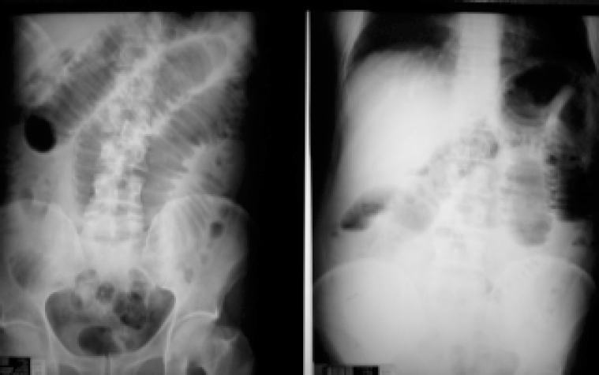

P.J.B., um homem de 62 anos, pedreiro, procura o pronto-socorro com queixa de dor abdominal há 2 dias. Diz que a dor é "no meio da barriga" e vem aumentando. No começo, melhorou com analgésico que a esposa lhe deu, mas agora não passa e dói "a barriga toda". Vomitou duas vezes ontem e três hoje. Evacuou muito pouco hoje cedo. Diz que não elimina gases desde o início da dor. Passou no pronto-socorro perto de sua casa, onde fez a radiografia mostrada a seguir, tomou medicação na veia, que aliviou um pouco a dor e as náuseas, e foi orientado a procurar um hospital maior, se a dor voltasse. Está sem fome, embora sinta muita sede. Diz que desde ontem "não pára nada no estômago". O exame físico revela que o paciente está em bom estado geral, mas bastante desidratado. O abdome é globoso, está bastante distendido e é difusamente doloroso. Na região inguinal direita, nota-se um abaulamento de cerca de 5 cm de diâmetro. É doloroso e tenso. Não está hiperemiado. O paciente diz que não se queixou "desse caroço", porque faz mais de 2 anos que ele "aparece e recolhe" e só dói quando é palpado. Há 2 dias apareceu e não saiu mais.
Radiografia de abdome de PJB
Tendo em mente o diagnóstico e o tratamento deste paciente, responda: